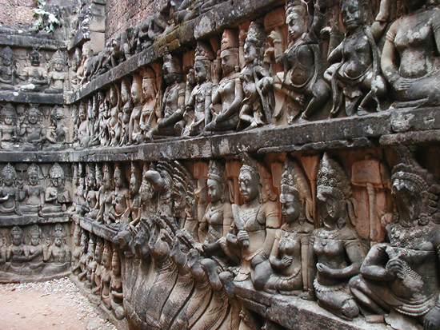
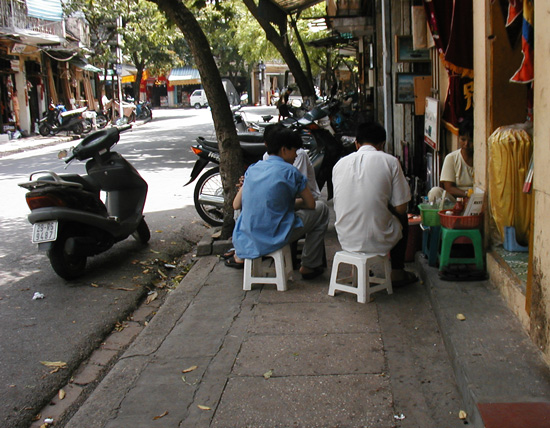
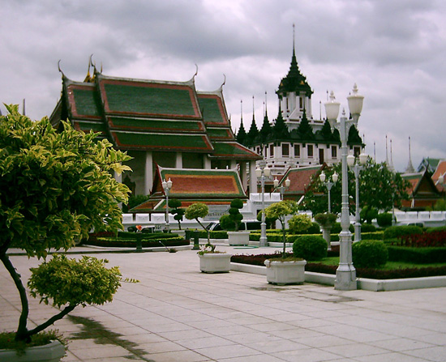

2003 Trav-E-Logs©
| Impressions | |
| back: Lopburi | Vientiane temple. |
================================= Some First Impressions and additional information for your next trip to Southeast Asia. =================================
September, 2003

After spending several days in Bangkok, THAILAND, I entered CAMBODIA by road and went directly to the town of Siem Reap. The first thing that struck me was that the Cambodian men were taller than their Thai counterparts. This was a surprise, as with no geographic barrier such as a mountain range or ocean between these two countries, physical differences between the two peoples were not expected.
Three weeks later in VIET NAM, the difference in how the Vietnamese and Khmer languages sounds immediately struck me. These certainly are not scientific observations, but got me to wondering what your first impressions are when entering a new country.
Photos of people in Vietnam will be somewhat easy to tell because of the continued popularity of the bamboo Sam-Pan style hat by many, especially the women in the fields. And Vietnamese immigrants continue to wear these hats.
In LAOS, two things were noticed. First, a tremendous number of trucks were loaded with huge logs, waiting to cross the border into Viet Nam, despite published reports the government has stopped the export of virgin forests. Second was a more intelligent way of trying to sell goods. In Cambodia and Viet Nam, a street person would badger you incessantly, trying to sell his wares. You would say "no thank you", then "no", then "NO!" and they may still be shoving things in your face, literally! Such as while sitting in a restaurant, trying to have a conversation with friends over dinner. The seller feels you are a captive audience, as your meal won't let you get up and leave. I abhor the tourist that gives in and buys under such conditions, because it only encourages such behavior. Fortunately, the Lao take "no thank you" as your final statement, and usually leave you alone. Such a wonderful feeling. Even when bartering, (with the exception of transportation), the second price the merchant mentions is often the final. A few other observations: bare breasts are rarely seen and then only in tribal areas. When the bus stops for a bathroom break, the guys boldly stand at the side of the bus. And half the children don't wear anything below the waist below the age of three. In the believe-it-or-not category, I observed a dog being encouraged to clean up after a child made a movement.
For those planning a trip to Southeast Asia, the guidebooks are always out of date because prices change rapidly. Internet sites giving latest information are very helpful. Even the words written on my web site become out-of-date! Roads may be either improved or washed out with monsoon rains. The rainy season is the second best time of the year to visit. Temperatures are much cooler, and rain showers generally are less than an hour long. If you're into flowers, November and December are the best months, which spells the end of the rainy season. Many of the villages say they will soon have Internet, and several already have computer labs with lots of children playing computer games on the network. Operators in Laos say they will have to charge $4 an hour - pretty steep for a country where the average monthly wage is $22. The high cost is justified, because every connection is on a long-distance call, the government taxes the merchant by the minute, and ISP charges are also high.
Enjoy your life -- it's the only one you've got.
Bill
------------------------------
Email me at the juno.com address "dancer2SEAsia"
"The traveler discovers that people are beautiful. It's the governments that are evil."
| next: alliterations |
| back: Lopburi |